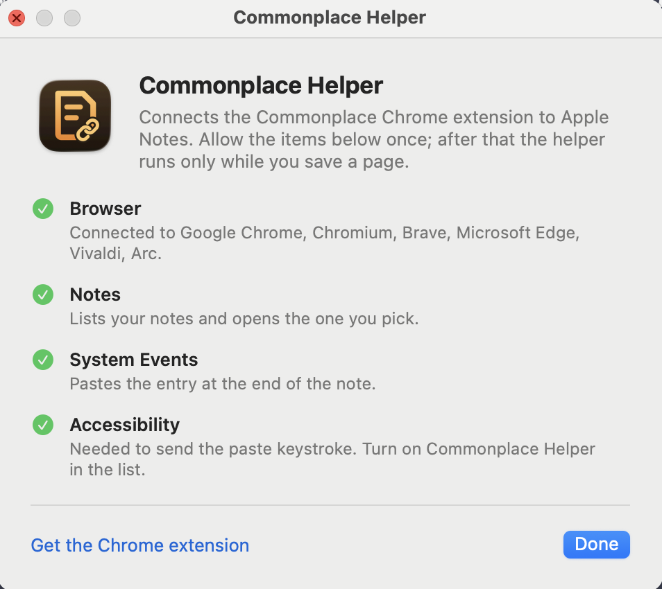

Commonplace Helper is a small, free Mac app, signed and notarized by Apple. Open it once and allow what it lists. After that it runs only while you save.
Free and open source:github.com/victor-shammas/commonplace
